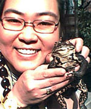
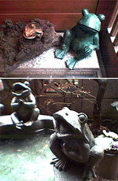
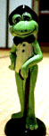
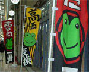
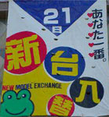
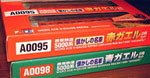

|
 平成１４年の初かえる様に遭遇！【帝都浅草発=けろりか同志記者】３月１８日（月）、東京浅草某寺院本堂前において、今春初のヒキガエル様と出会い、記念撮影をさせて戴く幸運に恵まれました。東京はここ数日とても暖かく、山門内の桜も八分咲き。春本番はすぐそこであります。【げこげこ大王７世】おおおー大王は、二月にピノコ同志が発見した冬眠中のカエル様と対面したのだが、そんときはまだ、カエル様は寝ていたので、土に戻してやったのである。けろりか同志の場合は、純粋にお目覚めのところと対面したので、春を感じる季節になってきたのう。 みんなも、カエルと再会できる喜びを『かえる俳句の会』に投稿してみようではないかあああ。もちろん季語は年中『かえる』です。 実家がカエル屋敷化！ 【帝都渋谷発=けろりか同志記者】先日、実家に顔を出したところ、かえる様の数が増えておりました。というのも母が私の影響により、７０歳にしてカエラーの意識に目覚めつつあるからでございます。世間様では「老いては子に従え」などと申しますが母も例に漏れず、かえる様に囲まれて幸せな老後を送っているようでございます。玄関に７匹様、庭に４匹様のかえる様がいらっしゃいましたが、特に庭の手水鉢の縁でご歓談中のかえる様があまりに楽しそうなので、大王様にもご紹介致したく、筆をとりました次第でございます。 かえる様たちは、米国の生活雑貨通販で買ったもので、かなりの存在感があるんですよ、大きさといい、重さといい。手水鉢（カタログでは“Bird Bath＝小鳥の水浴び場”となっていました）には、庭に置いたその日に、シジュウカラが水を飲みに来たそうです。
【全国かえる奉賛会】カエルをはじめるのに年齢は無縁なり。７０歳にしてカエラーに目覚めるとは素晴らしいぞ。母親のカエル化を熱烈に支持するものなりいい。周囲にカエルが増えてくると、幸福になるのであるーっ。それにしても、都心でカエル玄関やカエル庭に囲まれて暮らしているとは、なんという優雅なことであろうかああ。
かえる紳士の女性型『かえる美女』発見！ 【かえる掲示板発yukibou同志記者】カエルフェチ暦１０年くらいでしょうか・・・。変わったグッズ等色んな物を集めています。ところでこちらに載っていた「カエル紳士」の悩ましげな女性バージョンが我が家に居ます。今度お見合いしましょう(笑）←モーションかけるカエル娘。。。うっとりするカエル紳士→ 【全国かえる奉賛会】まずはお写真で見合いしています。でも、家族かもしれないので、どうなんだろ。。いったいどんなバリエーションがあるんでしょうか。情報を求む。
かえる美女は子持ち？！【かえる掲示板発けろいむ同志記者】我が家にも悩ましげなかえる娘がおります。 右肩に子がえるがのっています。（そう、どうやら彼女はすでに子持ちのようです。（笑））確か何年かまえに江ノ島にある店で購入したと思います。
そこにはかえる紳士はもちろん個性的なかえるたちがいました。ビキニのかえる娘もいた気がします。
 カエラーのためのパチンコ屋発見！【北九州発カエルのガーデナー甚六同志記者】大王様ご出身の北九州市に、カエラーのためのパチンコ屋を発見しました。場所は、八幡西区JR黒崎駅の真正面にある○○会館です。 ここのパチンコ屋でまず目を引くのは店のまわりをぐる〜っと取り囲む”のぼり”のぼりは２種類あり、大きなカエルの顔がマークになっています。
 また、新台入れ替えの日には、店の壁に大きな横断幕が下がり、これにもカエルマークが。あと、店内に貼ってある各種ポスターにもカエルマークが、書いてあります。店内にはカエルのパチンコ台もあるようです。これはもう、カエラーが経営するカエラーのためのパチンコ屋に間違いありません。”パーラーカエル”に改名を望む私です。
カエルパチスロも出現！【日本発まさえ同志記者】春の強風に誘われてふらふらしていたことでございます。日ごろから緑色に敏感に反応するようになっているわたしでございますが、街中で見つけたポスターを報告します！なんとパチンコ屋さんにはってありました。でもパチンコではなくて、スロットです。７７７になるとカエルの王様が出てくるのかな？やってみたいところですが、カエラーどころか、ギャンブラーになりかねないので、ポスターを眺めるだけにしておきます。だれかプレイしたら知らせてほしいっす！
それともうひとつ。先日、高知県にあるアンパンマンミュージアムに行ったとき、ミュージアムの前に広場があって、片隅にミニアスレチック公園がありました。そこにあった遊具です。カエルに背中に乗ろう！なんて考えたこの遊具を作った人はカエラーに違いないと思います。日本中の公園にこの遊具を置いてほしいものですな！
鉄道模型に赤・青ガエル登場！ 【帝都発鉄道王ともみ様】私は鉄道模型フリークですが、ちょうど有井製作所からそのものズバリ「赤ガエル」「青ガエル」鉄道模型が発売されましたのでお伝えします。実車は元東急のデハ５０００形で、昭和２９年にデビュー、永らく青ガエルの愛称で親しまれていました。 模型は静岡の岳南鉄道に移譲され、晩年を過していたのをモデル化したもので、赤ガエルが岳南鉄道のカラーに、青ガエルが東急時代の塗装に戻されたものです。
【全国かえる奉賛会】再び緑色に塗装した電車が走ってほしいなあ。先頭車両のヘッドライトは、ふたつの目玉にしてもしいー。
カエルサボテンの近況を大募集！【福岡発カワノ同志記者】ケロ展市場から買われていったカエルサボテンもかなりの数になります。いつも発売と同時に売り切れになってしまうので、手に入らないみなさんには、とっても恐縮です。また作ろうと思っているので、待っていてくださいね。ところで、カエルサボテンって、みんなの部屋でどんな風に過ごしているのか、近況を知りたくなりました。みんな元気にしてるかな。。よければ、教えください。画像付きでもいいですよ。
投稿採用者に武功カエル徽章を授与！ |

かえる古新聞過去に取り上げた記事を見出し付きで一覧したい人は、ここをクリック◆創刊号を見る◆先週号を見る◆話題の号を見る◆かえる新聞の昔を読む
|
私も入っています。。全国かえる奉賛会
大王様に会うには、このバナーをクリック。ずっと奥に写真館があるぞ。全国かえる奉賛会に入会するには、自分のホームページのどこかに、下の部分を追加するとバナーがリンク付きで表示されるぞ。どんどん入会しましょー |


|